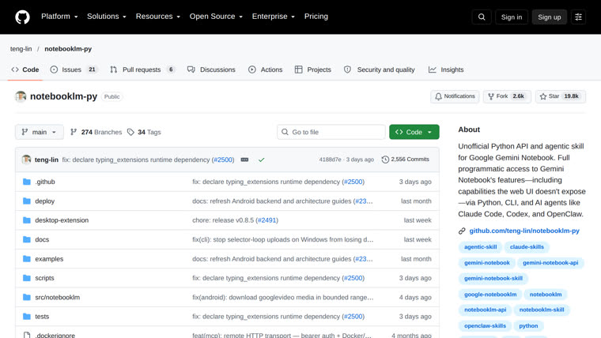

NotebookLM
O problema
Quando você joga muitos PDFs no Claude, ele lê tudo palavra por palavra e o seu limite de uso acaba rápido.
O que faz
Deixa o Claude comandar o NotebookLM do Google (hoje chamado Gemini Notebook). O Claude cria o caderno, envia os documentos e faz as perguntas; quem lê e analisa é o Google, e a resposta volta com as fontes citadas.
Como funciona
- Você instala a ferramenta no computador e entra com a sua conta Google uma vez
- O Claude cria um caderno no NotebookLM
- Envia os seus arquivos (PDF, links, YouTube, Google Drive)
- Faz as perguntas lá dentro; o Gemini lê e responde com base nas suas fontes
- A resposta, com as citações, volta para a conversa no Claude
Como instalar
uv tool install "notebooklm-py[browser]" → notebooklm login → notebooklm skill install (ou: npx skills add teng-lin/notebooklm-py). Também vale: colar o link no Claude Code e dizer 'instale isso para mim'.
uv tool install "notebooklm-py[browser]"
notebooklm login
notebooklm skill install
Exemplo
Você pede: Crie um caderno com os meus PDFs da pasta Contratos e me dê os três pontos principais.
Volta: O Claude cria o caderno no NotebookLM, envia os PDFs e devolve os três pontos principais com a indicação de qual documento sustenta cada um.
Cuidado
Não é oficial do Google: usa APIs não documentadas que podem mudar e quebrar a qualquer momento, e uso pesado pode ser limitado. Precisa de login com conta Google.